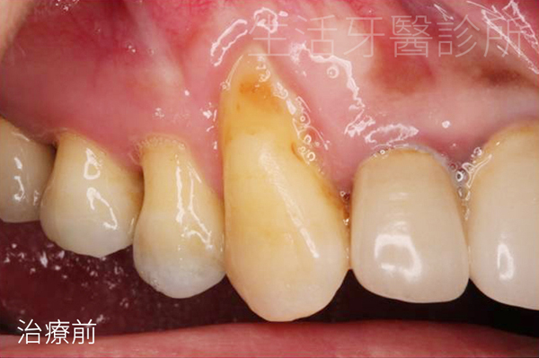
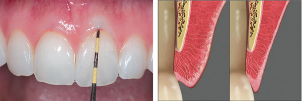
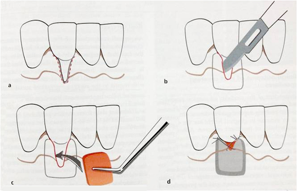
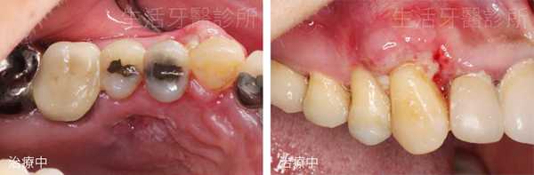
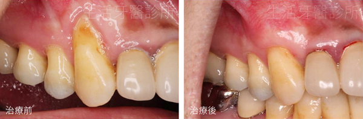

牙齦受到長期刺激或傷害後，牙齦邊緣可能逐漸往牙根方向退縮，造成牙根外露、冷熱敏感、牙齒看起來變長，也可能影響微笑外觀。常見相關因素包含刷牙方式不當、牙齒位置、矯正受力、牙周狀況與先天牙齦厚度。
若困擾明顯，可由牙周醫師評估牙齦厚度、角化牙齦寬度、牙周囊袋與齒間乳突條件，再判斷是否適合以牙根覆蓋術改善。
1. 什麼是牙齦萎縮與牙根外露？
牙齦萎縮會讓原本受到牙齦保護的牙根表面暴露。牙根缺少牙冠表面的琺瑯質保護，因此可能更容易出現冷熱敏感，也會增加根面磨耗與清潔困難。
治療前需要先找出原因。若與牙周發炎、刷牙創傷或咬合問題有關，通常需先控制刺激來源，再評估軟組織移植與牙根覆蓋的可行性。

2. 案例評估：薄型牙齦與敏感
本案例的右上犬齒牙齦明顯退縮，牙根外露並對冷熱敏感。牙周檢查顯示牙周囊袋深度與齒間乳突狀況正常，但角化牙齦不足，並屬較薄的牙齦型態。
薄型牙齦常呈現較明顯的扇貝狀邊緣，角化牙齦較薄且較窄，牙冠外型也常偏瘦長。這類條件在刷牙或其他刺激下，牙齦退縮風險可能較高。

3. 自體結締組織移植牙根覆蓋術
醫師評估後採用自體結締組織移植牙根覆蓋術。手術會從上顎內側取得適量的自體結締組織，再將組織移植到牙根外露區域並縫合，希望增加牙齦厚度並覆蓋部分裸露牙根。
術式選擇會依退縮範圍、牙齦厚度、角化牙齦寬度、齒間組織與清潔條件決定，並非每一種牙齦萎縮都適合使用相同方式。


4. 拆線與術後三個月追蹤
原始案例於術後一週拆線，傷口恢復狀況良好。術後三個月追蹤時，可觀察到移植區牙齦組織較厚，牙根外露情況改善，患者的敏感與外觀困擾也有所緩解。
牙周軟組織需要時間成熟與穩定，恢復過程應依醫師指示清潔、避免拉扯傷口並按時回診。個別修復程度與恢復速度會因缺損條件及照護狀況不同。

5. 療效維持與日常照護
牙根覆蓋術後仍需維持溫和而確實的清潔方式，避免以過大力量橫向刷牙。若存在牙周發炎、咬合創傷或不良習慣，也需一併處理，才能降低再次退縮的風險。
下圖以線條比較治療前後的牙齦高度，可看到移植後的牙齦邊緣較接近原本牙冠與牙根交界位置。實際可覆蓋範圍仍取決於個人牙周條件。
單一案例僅供治療方式說明，不能視為療效保證。牙齦萎縮的成因與嚴重程度不同，需由牙周醫師完成臨床檢查後，才能評估牙根覆蓋範圍、術式與預期結果。